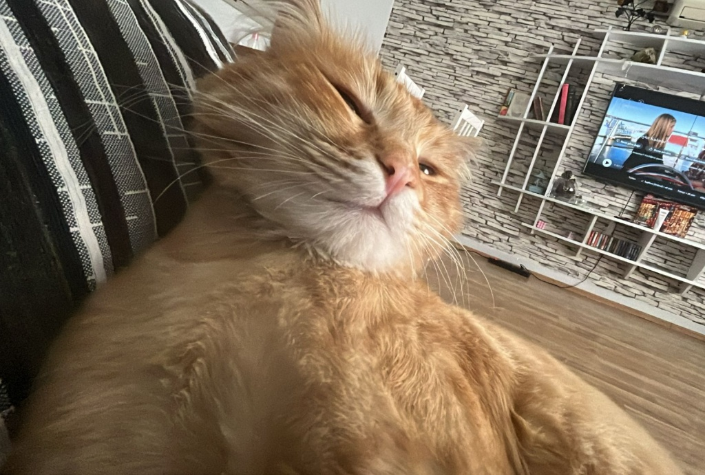

"Her şeyin başladığı o masum an... Kim derdi ki bu bakışlar yıllar sonra benim tüm dünyam olacak?"

"Sadece güzelliğinle değil, o gülüşünle bana her gün 'iyi ki' dedirttiğin anlar..."

"Tabii ki sadece ikimiz değiliz. Hayatımızın sarı, tüylü ve uykucu patronu Nugget'ın onayını almadan olmaz."

"Ve biz... Yan yanayken her şeyin anlam kazandığı, o eksiksiz tablo."